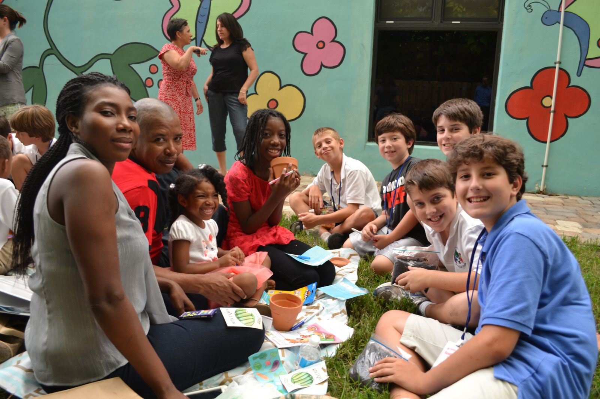
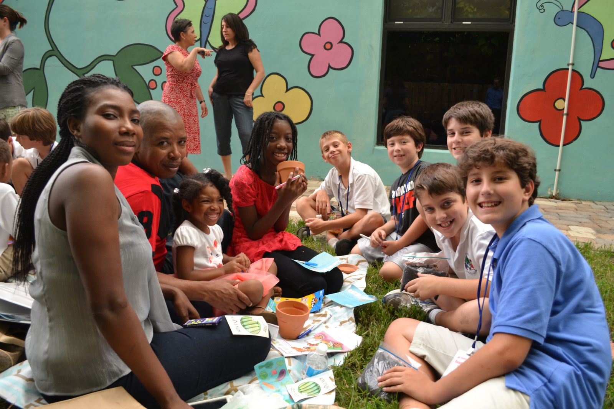

Why start this NGO?
A desired passion to enrich the livelihood of the impoverished has always been one of our core fundamental goals we aim to achieve, by giving back to those who are in need. Creating jobs skills are one of the skills that we lack in the business sector to enable more job opportunities, and iKhaya Lezizwe taps into that loop space where we provide job skills starting from an early development stage.
It is important to us as an NGO that we fulfil our promises in enriching the lives of others, by making an impact globally for a greater change and a better, sustainable lifestyle regardless of ethnicity, religion, culture or socio-economic background. The services we provide for orphans and the elderly are:
- Feeding Scheme
- Medical care
- Education
- Employment training programmes
Our target audience:
Our NGO's target market covers all age groups simply, because poverty has no age. We provide improvement from an early childhood stage to old age stage:
Benefits to uplift the community:
As Ikhaya Lezizwe was created, the NGO aims at promoting sustainability in the life of poverty, by including charitable organisations, membership groups such as employment training programmes, public educational institutions, public hospital, as well as old-age homes and feeding schemes.
- Improving the standard of life, by taking issues faced by the community and how can the NGO do to better to improve the livelihood of the people to be more at ease and accessible.
- Reducing illiterate levels, as mentioned above by providing free education, for knowledge enhancement. Those who have the fundamental skills of knowledge, we offer employment training programmes to sharpen job skills and enhance their employment opportunities and make a living.
 
